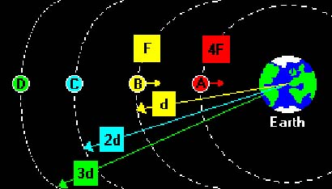
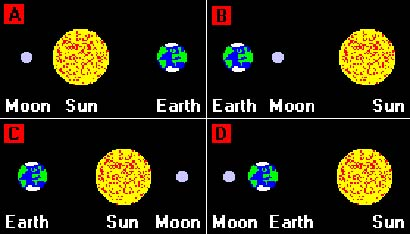
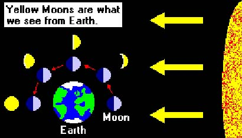
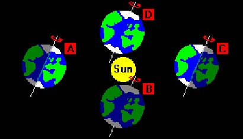
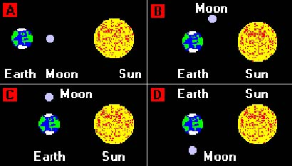
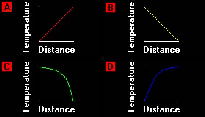

The solar system
1) Which of the following states the correct order of the planets?
2) Which of the following are known as the "Inner planets"?
3) Which of the following are known as the "Outer planets"?
4) Which two planets do the Asteroids orbit between?
5) Which of the following statements is NOT true about the planets?
6) The Sun is a star, which is our major source of energy. To provide the Earth with heat and light, it has to release massive amounts of energy. What is the source of this energy?
7) It was once thought that the Sun released energy from chemical reactions. Why is this no longer believed to be true?
8) The Sun is still extremely hot, whereas the planets are much cooler. Which of the answers gives the correct explanation?
9) The Sun emits electromagnetic radiation. From which part of the electromagnetic spectrum does this radiation come from?
10) During a star's lifetime, atoms of lighter elements; mainly hydrogen and helium, gradually fuse to produce atoms of heavier elements. Atoms of the heaviest elements are present in both the Sun and the inner planets of our Solar System. What does this suggest?
11) Which statement correctly describes the four Inner planets?
12) Which statement correctly describes the five Outer planets?
13) The statements below give information on an imaginary planetary system, orbiting a star similar to our Sun. Which planet might be suitable for colonisation by human life?
Gravity and Orbits
14) The Moon orbits the Earth, and the Earth obits the Sun. These bodies are held in orbit about each other by a force. What is this force which acts between all masses?
15) A star has four planets orbiting it. These planets are of equal size and mass, but are different distances from the star. Which planet has the greatest gravitational pull exerted upon it by the star?
16) Study the diagram carefully. Planet B is a distance "d" from the Earth and has a force "F" acting on it. Planet C is the same size and mass as planet B, but is "2d" from the Earth. What will be the force; created by the Earth, acting on planet C?

17) Study the diagram carefully. Planet B is a distance "d" from the Earth and has a force "F" acting on it. Planet D is the same size and mass as planet B, but is "3d" from the Earth. What will be the force; created by the Earth, acting on planet D?
18) Study the diagram carefully. Planet B is a distance "d" from the Earth and has a force "F" acting on it. Planet A is the same size and mass as planet B, but has a force "4F" acting on it; created by the Earth. What is the distance of planet A from the Earth?
19) There are four main stages in the journey of a rocket from Earth to our Moon. Which part of the journey would require the most fuel?
20) Two moons of the same mass orbit a planet. The orbit of the Earth's Moon is almost circular, but the orbits of the moons are much more complicated. What is the most likely reason for this?
21) The stars in the night sky form fixed patterns which rotate as the Earth spins. What is the name given to these patterns?
22) You take a picture of the constellation of Ursa Major on two consecutive nights and you notice a star like object that has moved across the constellation. What is the object most likely to be?
The Moon
23) How long does it take the Moon to orbit the Earth?
24) Study the diagrams carefully. Which one correctly shows an eclipse of the Moon?

25) Study the diagrams carefully. Which one correctly shows an eclipse of the Sun?
26) Study the diagram carefully. Which statement correctly describes the phases of the Moon, starting from the right side of the Earth?

27) One theory about the future of our Solar System states that the motion of the Moon produces a small drag on the Earth as it orbits the Sun. What effect will this have on the Earth?
Comets, Asteroids and Meteorites
28) Which of the following statements is NOT true about asteroids?
29) Which of the following statements is NOT true about Meteorites?
30) A body orbits the Sun with a very elongated orbit. The Sun is not at the centre of the orbit, but near to one end of it. Which statement correctly suggests what this body might be?
31) Which of the following statements is NOT true about Comets?
Satellites
32) Which of the following statements is NOT a common use for artificial satellites?33) Which of the following statements is NOT true for a satellite that has been placed into a geostationary orbit?
34) When geostationary satellites are launched, they must be given the correct velocity to "park" them in orbit. What might happen to a satellite that was intended for a geostationary orbit, but its launch velocity was just slightly too low?
35) Which of the following statements is NOT true for a satellite that has been placed into a low Polar orbit?
36) Astronomers find that telescopes placed upon satellites, such as the Hubble Space Telescope, produce much better images of planets than Earth based telescopes. Which statement correctly suggests why this is?
37) Scientists use space probes to explore distant bodies. Which of the following states the furthest these space probes have travelled?
The Earth
38) How long does it take the Earth to rotate once on its axis?
39) Which of the following statements is NOT true about day and night on Earth?
40) How long does it take the Earth to orbit the Sun?
41) Study the diagram carefully. Which statement correctly describes the seasons in the Northern Hemisphere at A, B, C and D?

42) A star has four planets orbiting it. These planets are different distances from the star. Which planet will take the longest time to complete one orbit around the star?
43) On the Earth, the level at any point on a large area of water rises and falls twice a day. What causes these tides?
44) Which of the following phases of the Moon occur during a spring tide?
45) When the Earth is viewed from its side with the North Pole at the top, it has bulges of water either side of it. What causes these bulges?
46) The height of the tide at any particular time and place depends on the relative positions of the Sun, Earth and Moon. A particularly high and low tide is known as a spring tide. Study the diagrams carefully. Which one correctly shows the alignment of these three bodies when there is a spring tide?

The Stars
47) The Sun is just one of many millions of stars in a group of stars. What is the name given to such a group of stars?
48) Which of the following statements is NOT true about galaxies?
49) One of the limitations of space travel is the time it takes to travel the large distances involved. If you can travel at half the speed of light and a star is four light years away, how long will it take to get there?
50) One of the limitations of space travel is the time it takes to travel the large distances involved. If you can travel at half the speed of light and a star is four light years away, in principle it could take you 8 years to get there. Why in reality would it take longer?
51) Given that the speed of light is 300,000,000 m/s what is the distance travelled in four light years?
52) Given that the speed of light is 300,000,000 m/s and light from the Sun takes 8 minutes to reach us how far away is the Sun?
53.) The flow chart shows the possible life cycle of our Sun. Clouds of Dust and gas -> Star contracts -> Main Sequence star -> Star expands -> x -> White Dwarf -> Black Dwarf. What should be at "x"?
54.) Big stars turn into a "Supernova" after the "Red Giant" stage of their life. Which of the following statements correctly states the next stages of a big star's life?
55.) Stars are very massive compared to the Earth. This means that the force of gravity drawing together the matter in a star is very strong. If a star is not going to collapse, the force of gravity must be balanced by an outward acting force. What creates this force?56.) Our Sun is cooling down and will eventually evolve into a Red Giant. What is the most likely effect that this will have on the Earth?
57.) If a star is massive enough, when it reaches the end of its life it may explode, throwing dust and gas into space. When this happens, what is the star called?58.) How are second generation stars, like our Sun formed?
59.) The matter from which Neutron stars, White Dwarfs and Black Dwarfs are made, is millions of times denser than any matter on Earth. What is the cause of this?
The Big Bang
60.) Light from a distant galaxy appears to be shifted to the red end of the electromagnetic spectrum. What is a possible explanation for this?61.) One of the greatest discoveries in astronomy was that made by Edwin Hubble. He found that light from the most distant galaxies was shifted towards the red end of the spectrum more than light from nearby galaxies. This is called the "Doppler Effect". What does this red shift with the light from galaxies provide evidence of?
62.) Background radiation is a low frequency microwave radiation which comes from all directions in the Universe. It seems that this radiation is "cooling" and dropping in frequency. What does this suggest?
63.) What does the Steady State theory of the Universe state?
64.) There is not much support for the Steady State theory, especially since the discovery of background radiation. Why is this?
65.) All the galaxies in the Universe appear to moving apart rapidly. What does this imply?
66.) The Universe is believed to be 15 billion years old. Its age has been estimated from the current rate of expansion. What force will determine whether the Universe will expand forever?
67.) Which statement correctly describes what the fate of the Universe depends on?
68.) The Universe may stop expanding and start contracting. What will cause this to happen?
69.) If there is too little mass in the Universe, what may happen?
70.) It is believed that the Earth was formed from the condensation of hot gases. This then cooled further over millions of years to form the Earth. Study the graphs carefully. If you were able to measure temperature inside the Earth, going from the surface to the Earth's centre, which graph would show the temperature changes that you would record?

Right:
0
Wrong:
0
Attempts:
0